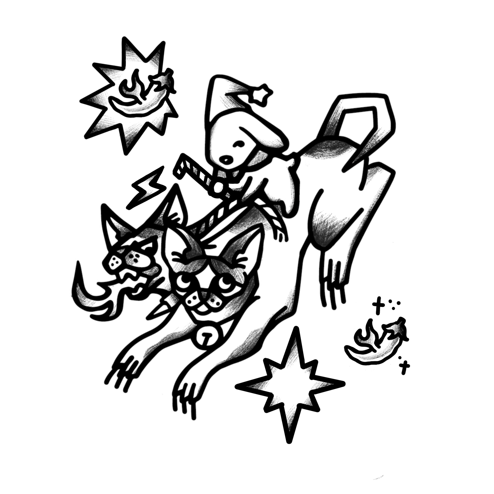
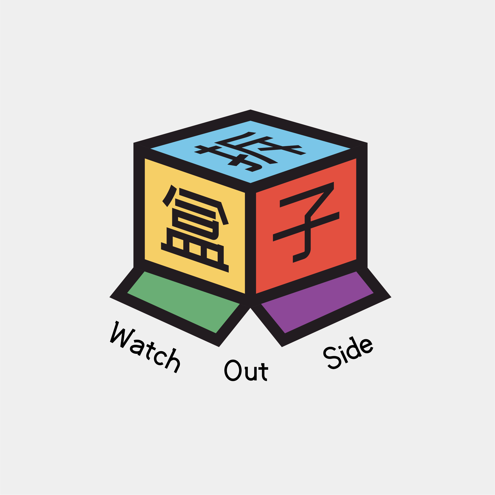

Beyond the research, an ongoing interest in bringing critical theory into everyday practice — veganism, fashion, art, and AI among them. Open to conversation, collaboration, and co-creation around any of it.
研究之外，她持续关注如何将批判理论落实于日常实践——包括素食主义、服装、艺术与人工智能等领域。欢迎围绕这些议题展开交流、合作与共创。
